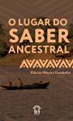
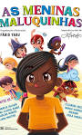
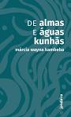

Obras
Ay kakyri tama
2018
Em Ay Kakyri Tama [eu moro na cidade, em tupi-kambeba], Márcia Kambeba constrói uma ponte entre sua origem indígena e a vida em Belém do Pará, apresentando a história de seu povo e sua luta em poesias e imagens repletas de emoção e verdade.
Saberes da Floresta

2020
Este livro nasce com o objetivo de partilhar e fazer girar reflexões e práticas comprometidas com formas diversas de pensar o mundo, as relações, os modos de aprender e de ensinar. Ele se apresenta como um fio que abre caminhos, promove aproximações entre saberes diversos, amplia possibilidades de visões de mundo e incita novas formas de ensino e aprendizado.
O lugar do saber ancestral
2021
O livro contribui para a disseminação e preservação dos conhecimentos tradicionais que têm sustentado comunidades indígenas ao longo de séculos. Ele oferece um olhar autêntico e profundo sobre o conhecimento ancestral, destacando sua relevância para a compreensão da identidade e o respeito às diversidades.
Kumiça Jenó: Narrativas Poéticas Dos Seres Da Floresta
2021
Neste livro Márcia apresenta 25 poemas narrativos sobre figuras folclorizadas presentes em diversas culturas nativas, principalmente as amazônicas. Os poemas recontam a tradição oral recebida pela autora a seus ancestrais. Nesse contexto, Márcia nos transmite sua ancestralidade para compreendermos a intrínseca relação entre a floresta, seus seres e seus povos, em uma poética que encanta e desperta reflexões sobre o respeito perante a Natureza.
As Meninas Maluquinhas
2021
As Meninas Maluquinhas é uma obra que traz diversos contos sobre garotas diferentes, mas que podem ser o que bem entenderem: princesas, fadas, bruxas, sonhadoras, maluquinhas, caubóis, campeãs de ioiô. Foi escrito em conjunto com as autoras: Andreza Delgado, Anna Claudia Ramos, Carolina Munhóz, Eliana Martins, Elizandra Souza, Míriam "Mikannn" e Paula Pimenta.
O povo Kambeba e a gota d'água

2022
Cada povo conta de sua forma como nasceu. A narrativa faz parte da identidade de cada nação e precisa ser transmitida de geração a geração, enquanto houver vida no planeta. A cultura dos Omágua/Kambeba é marcada pela água. Ser o povo das águas é motivo de alegria e honra para os que vivem na aldeia e na cidade.
De almas e águas kunhãs
2023
De almas e águas kunhãs reúne ensaios e poemas de Márcia Kambeba em que é possível ter contato com temas tão caros e urgentes para o tempo atual: territorialidade, proteção do meio ambiente, respeito à natureza, identidade indígena e resistência dos povos originários. A obra conta com grafismos feitos pela própria autora e prefácio da escritora e ativista indígena Eliane Potiguara.
Cocar
2024
Respeitar, preservar, partilhar. O que os ancestrais e a natureza nos ensinam, se estivermos dispostos a ouvi-los. Diz o sábio ancião: “A ave troca de pena obedecendo às fases da lua. Lá do alto da grande árvore troca as penas uma a uma, que o indígena junta e tece o seu cocar”. Pode usar em seu cocar.